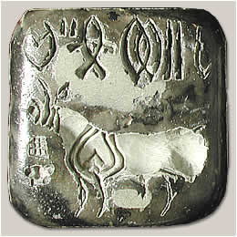

Early excavations at Mohenjo-daroIn about 1920 there was enough interest in the site of Mohenjo-daro for the archaeologist Rakhal Das Banerji to excavate there. In the 1921-22 season Banerji began his excavations. In this first season Banerji's team found the remains of a large city built mainly from baked brick. However, they did not know when it might have been built or who might have built it. Banerji's team found objects such as weights, beads and finely painted pottery. Perhaps the most important finds were small square seals like the ones found at Harappa in the late nineteenth and early twentieth centuries. 
The first Indus Valley seal found at Harappa in 1872 In 1924 the objects found at Mohenjo-daro were compared with some found at Harappa. Many objects were so similar in material and construction that the archaeologists believed they might have been made by people sharing the same culture. The work at Mohenjo-daro was successful. The possibility that objects from the site might be related to those from Harappa was exciting for the archaeologists. The next step was to explore the site more completely. So large-scale excavations were planned for Mohenjo-daro under the guidance of Sir John Marshall who was the Director General of the Archaeological Survey of India. Excavations continued throughout the 1920s and 1930s with several teams of excavators. During this period, the site was divided into different areas. Each area was given a 'title' based on the name of the archaeologist working there. HR Area = Harold HargreavesDK Area = Kashinath Narayan Dikshit L Area = Ernest J.H. Mackay VS Area = Madho Sarup Vats SD Area = A.D. Siddiqi |